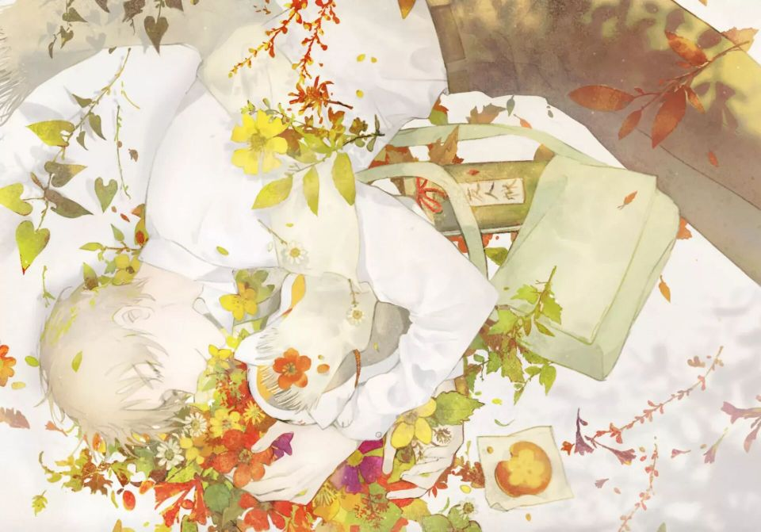

树上的妖怪 ||什么时候可以变成一个人生活呢
来自绷带的评价
枯れ葉舞う町角を***駆け抜けてく乾いた風***伸びた影とイチョウ並木***季節を見てたかった*** ***返事のない呼ぶ声は***あっという間***かき消されてしまう***目抜き通り人波抜けて*** どこか遠く誰もいない場所へ***気付いていたのに***何も知らないふり***一人きりでは何もできなかった ***出会えた幻にさよならを***茜さすこの空に***零れた弱さに手のひらを***一輪の徒花そんなふうに ***願い叶え痛みを知る***渡り鳥の鳴く声も***赤く染まる雲に消えてしまう***帰り道も遠く離れて ***今は一人誰もいない場所で***気付いた景色の色に***ふれたとしても***一人きりでは***声も出せなかった ***愛した幻に口づけを***黄昏れたこの空に***まだ夕べの星灯らない***待ち宵も朧げ月は何処に***引き裂かれて痛みを知る ***くり返す日々の中で***探してたのは***歩き続けるための願い***出会えた幻にさよならを***憧れはこの空に ***流れた月日を手のひらに***一片の花弁そんなふうに***痛み重ね出会いを知る*** 出会い重ね願いを知る
点击播放

点击此处吃爷安利ヽ(#`Д´)ﾉ~
黄叶翩翩舞纷飞 港口一出不知归 ,长影孑立林荫处 思见季节心未改,呼声阵阵无回音 过往云烟无处寻, 枯风拂尽人际处 远方清冷身难随,心虽有所觉 但亦作不解,独身难作为 如随风中叶,身陷幻梦里 初醒道离别, 夕晖下 天际中,洒落怯弱释心胸 迎手弄,落红一片掌上捧 至如斯,夙愿得偿 方知伤痛,候鸟呷呷竭力鸣 余音绝于红霞间, 归途尚在迢遥路,今时孤身清冷处,已觉景之色 心虽有所触,独身难传声 如夕空中鸟,留恋幻梦里 轻吻不忍别, 黄昏里 天际中,昨夜星辰未点亮,十四胧月在何处,即将分离 方知伤痛,日复一日苦寻觅 继续前行之所愿, 身陷幻梦里 初醒道离别,憧憬在 天际中,流逝岁月释心胸 迎手弄,落红一片掌中握 至如斯, 几经伤痛 方知相会, 几经相会 得知夙愿。
只要有想见的人,就不再是孤单一人了。
恶作剧之雨 ||你我之间，仅此一刻
曾几何时暮雪之日 ||一直在寻找的东西到底是什么呢
树上的妖怪 ||什么时候可以变成一个人生活呢